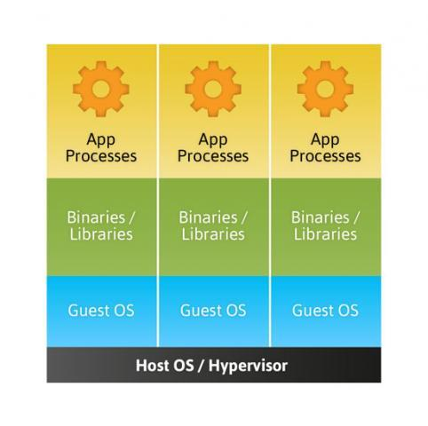

Where did Docker come from?
About me
- Scala Dev @ VirtusLab
- Like checking new things
- Car guy
Work difficulties

Customers
Code base
Documentation
ENVIRONMENT
VMs vs Containers

Long, long time ago
chroot
{kind=link}
Namespaces & cgroups
show time
LXC
{kind=link}
Briefly
- system-level virtualization
- it is not virtual machine
- cgroups usage
- provides process container
Available commands
- # lxc-create -n NAME -t TEMPLATE -- TEMPLATE_OPTIONS
- # lxc-start -n NAME -d
- # lxc-stop -n NAME
- # lxc-destroy -n NAME
- # lxc-console -n NAME
- # lxc-attach -n NAME
Internet inside container
Host configuration
# sysctl net.ipv4.ip_forward=1
# dhcpd lxcbr0
# iptables -t nat -A POSTROUTING -o wlp3s0 -j MASQUERADE
# iptables -A FORWARD -i wlp3s0 -o lxcbr0 -m state \
--state RELATED,ESTABLISHED -j ACCEPT
# iptables -A FORWARD -i lxcbr0 -o wlp3s0 -j ACCEPT
LXC containter config
lxc.network.type = veth
lxc.network.flags= = up
lxc.network.link = lxcbr0
Pros
- no host pollution
- powerful configuration
- no virtualization overhead
- works in background
Cons
- bare distro after install
- difficulties in network configuration
- some problems when running different distro than host
- requires Linux indepth knowledge
Docker
 https://s-media-cache-ak0.pinimg.com/originals/c2/eb/9e/c2eb9e91b2bb4ee0801f676bf4fae515.jpg
https://s-media-cache-ak0.pinimg.com/originals/c2/eb/9e/c2eb9e91b2bb4ee0801f676bf4fae515.jpg
Briefly
- written in GO
- used to use LXC as engine
- git-like managment
Pros
- runs everywhere!
- huge community support
- rich documentation with examples
- predefined images in repository
Cons
not found yet
 https://imgur.com/MJHfm1c
https://imgur.com/MJHfm1c

# Scala and sbt Dockerfile
#
# https://github.com/hseeberger/scala-sbt
#
FROM openjdk:8
ENV SCALA_VERSION 2.12.2
ENV SBT_VERSION 0.13.15
RUN touch /usr/lib/jvm/java-8-openjdk-amd64/release
RUN \
curl -fsL http://downloads.typesafe.com/scala/$SCALA_VERSION/scala-$SCALA_VERSION.tgz | tar xfz - -C /root/ && \
echo >> /root/.bashrc && \
echo 'export PATH=~/scala-$SCALA_VERSION/bin:$PATH' >> /root/.bashrc
RUN \
curl -L -o sbt-$SBT_VERSION.deb http://dl.bintray.com/sbt/debian/sbt-$SBT_VERSION.deb && \
dpkg -i sbt-$SBT_VERSION.deb && \
rm sbt-$SBT_VERSION.deb && \
apt-get update && \
apt-get install sbt && \
sbt sbtVersion
WORKDIR /root
FROM ubuntu
RUN apt-get update && apt-get install -y openssh-server nano inetutils-ping
RUN mkdir /var/run/sshd
RUN echo 'root:screencast' | chpasswd
RUN sed -i 's/PermitRootLogin without-password/PermitRootLogin yes/' /etc/ssh/sshd_config
EXPOSE 22
CMD ["/usr/sbin/sshd", "-D"]
Docker compose
version: "3"
services:
postgres:
image: postgres:9.6.2-alpine
environment:
POSTGRES_USER: "xxx"
POSTGRES_PASSWORD: "changeme"
POSTGRES_DB: "pip"
ports:
- "5432:5432"
postgres-test:
image: postgres:9.6.2-alpine
environment:
POSTGRES_USER: "xxx"
POSTGRES_PASSWORD: "changeme"
POSTGRES_DB: "pip"
ports:
- "5433:5432"
pip:
image: bkowalik:demo
environment:
POSTGRES_HOST: "postgres"
POSTGRES_PORT: 5432
POSTGRES_USER: "xxx"
POSTGRES_PASSWORD: "changeme"
POSTGRES_DB: "pip"
ports:
- "9000:9000"
links:
- postgres
Where to use?
- integration testing
- multiple environments
- easy sharing